2022年北京市中考地理真题 原卷解析
2022年北京市初中学业水平考试
地理试卷
一、选择题（本大题共25小题，每小题1分，共25分。在每小题给出的四个选项中，只有一项是最符合题目要求的）
2022年的端午节在6月3日，当日多云，小明到颐和园写生。图1为颐和园示意图，图2为他的绘画作品。读图，完成下面小题。
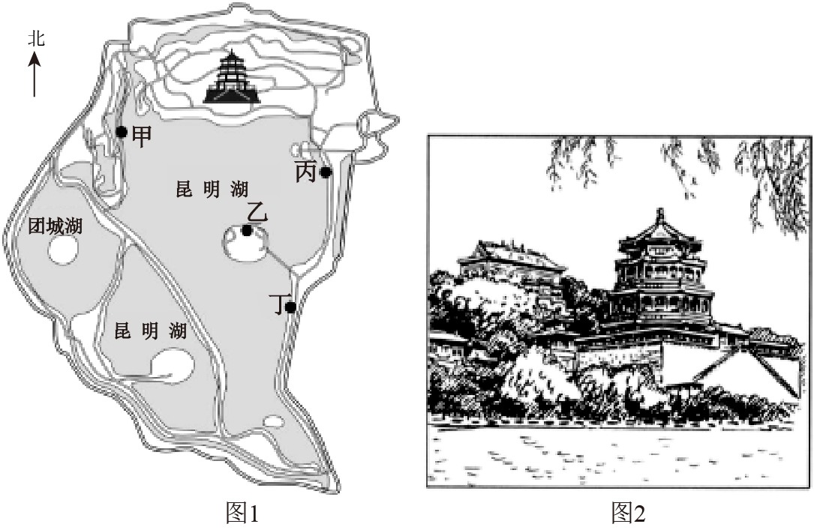
1. 能反映当日天气状况的符号是（ ）
A. B. C. D.
2. 小明看到颐和园内（ ）
A. 迎春花开B. 绿柳成荫C. 落叶纷飞D. 冰封湖面
3. 根据图2，判断小明写生的地点最可能在图1中的（ ）
A. 甲地B. 乙地C. 丙地D. 丁地
4. 端午节的节日习俗是（ ）
A. 卷春饼B. 摇元宵
C. 包粽子D. 打月饼
【答案】1. D 2. B 3. A 4. C
【解析】
【1题详解】
材料中提到当日多云，D正确。为大雪，A错误。为暴雨，B错误。为雾，C错误。故选D。
【2题详解】
2022年的端午节在6月3日，为夏季，绿柳成荫，B正确。银春花开为春季，A错误。落叶纷飞为秋季，C错误。冰封湖面为冬季，D错误。故选B。
【3题详解】
本图为指向标地图，指向标指向正北，佛香阁 位于图1的正北方。由图2写生的绘画作品可知，小明隔着湖与佛香阁相望，且距离佛香阁较近，佛香阁下侧的方行台基的棱正对着小明的视线，反推出小明位于佛香阁的西南方向，可知小明写生的地点最可能在图1中的甲处，A正确。
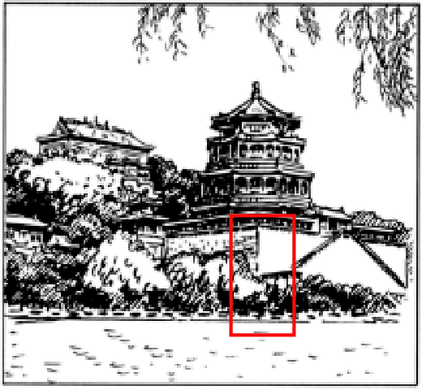
乙位于佛香阁的正南方，B错误。丙与佛香阁之间隔了一个小岛，阻挡视线，C错误。丁位于佛香阁的东南方向，D错误。故选A。
【4题详解】
端午节的节日习俗是包粽子，C正确。在中国南方，过春节不吃饺子，吃春卷和芝麻汤圆，并且在漳州一带清明时节也吃春卷，A错误。摇元宵属于元宵节的习俗，B错误。打月饼属于中秋节的习俗，D错误。故选C。
【点睛】颐和园，中国清朝时期皇家园林，前身为清漪园，坐落在北京西郊，距城区15公里，全园占地3.009平方公里（其中颐和园世界文化遗产区面积为2.97平方公里），水面约占四分之三。
冷链物流（图左）利用温度控制、保鲜等技术和冷库、冷藏车等设施设备，确保产品在送达目的地过程中始终保持规定温度。图右为我国冷链物流骨干通道规划示意图。读图，完成下面小题。
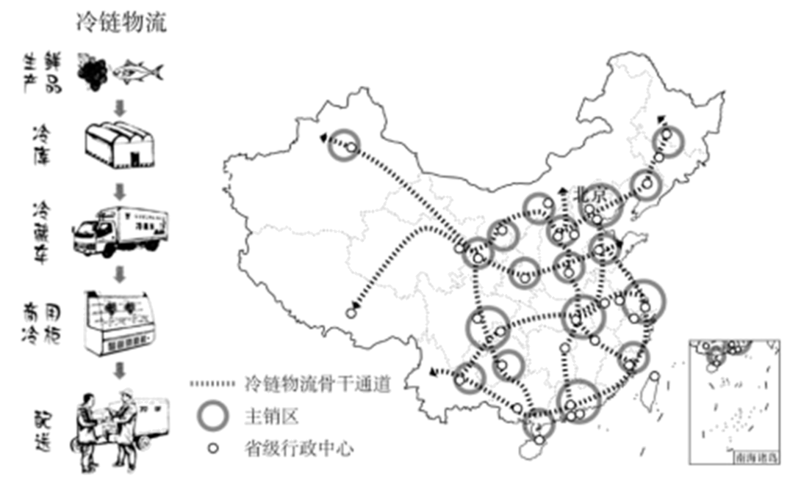
5. 我国冷链物流（ ）
A. 所有骨干通道均交会于北京B. 骨干通道纵贯南北、连接东西
C. 主销区集中分布于西部地区D. 主销区覆盖所有省级行政中心
6. 冷链物流骨干通道网体现我国（ ）
①地处热带，国土辽阔②交通运输业的发展和技术的进步
③环境多样，物产丰富④居民消费需求和消费能力的提升
A. ①②③B. ①②④C. ①③④D. ②③④
7. 我国冷链物流骨干通道网的完善，可以（ ）
①降低产品运输的能源消耗②带动沿线区域发展
③减少产品变质造成的浪费④提升人民生活品质
A. ①②③B. ①②④C. ①③④D. ②③④
【答案】5. B 6. D 7. D
【解析】
【5题详解】
有两条骨干通道均交会于北京，A错误；骨干通道纵贯南北、连接东西，B正确；主销区集中分布于东部和中部地区，C错误；主销区覆盖大部分省级行政中心，少部分没有被覆盖，如西藏自治区的拉萨，D错误。故选B。
【6题详解】
冷链物流骨干通道网体现我国交通运输业的发展和技术的进步，利用温度控制、保鲜等技术和冷库、冷藏车等设施设备进行运输；自然环境丰富多样，物产丰富，运量大；居民消费需求和消费能力的提升，生活水平提高，②③④符合题意，D正确。我国大部分地处北温带，少部分地处热带，没有寒带，①不符合题意，ABC错误。故选D。
【7题详解】
我国冷链物流骨干通道网的完善，可以促进物资的流动，带动沿线区域发展；通过冷冻、保鲜，减少产品变质造成的浪费；促进物资流通，丰富物品种类，提升人民生活品质，②③④符合题意，D正确。运量的增多，以及冷冻保鲜等技术，都需要耗能，使运输能耗增大，①不符合题意，ABC错误。故选D。
【点睛】冷链物流是利用温控、保鲜等技术工艺和冷库、冷藏车、冷藏箱等设施设备，确保冷链产品在初加工、储存、运输、流通加工、销售、配送等全过程始终处于规定温度环境下的专业物流。
人口普查有助于了解我国人口基本国情。图为依据第七次人口普查数据绘制的我国省区人口数量及人口增长率（2010-2020年）分布图。读图，完成问题。
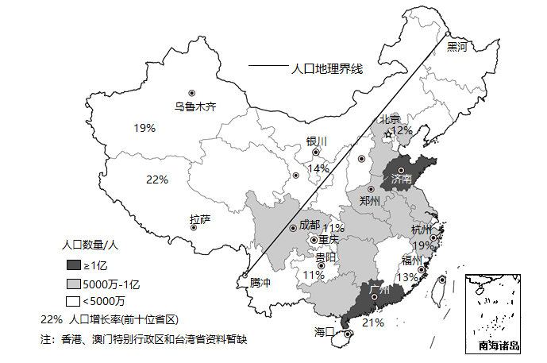
8. 我国省级行政区中，（ ）
A. 河南省和四川省人口数量均超1亿B. 宁夏回族自治区的人口比山东省多
C. 长江沿线各省区人口均超5000万D. 人口大省主要在黑河一腾冲线以东
9. 2010-2020年我国人口增长状况为（ ）
A. 新疆维吾尔自治区人口增长率最高B. 浙江省人口增长数量大于北京市
C. 东南沿海各省区人口增长速度较慢D. 黑河—腾冲线以西各省区人口增长率低
【答案】8. D 9. B
【解析】
【8题详解】
读图可知，河南省和四川省人口数量均为5000万至1亿之间，排除A；山东人口数量超一亿，宁夏回族自治区人口少于5000万，故宁夏回族自治区的人口比山东省少，排除B；青海、贵州等未超过5000万，排除C；人口大省主要在黑河一腾冲线以东，以山东、广东人口最多，D正确，故选D。
【9题详解】
人口增长率指的是一定时间内人口增长数量，通常是一年内，由人口自然变动和迁移变动而引起人口增长的比率。读图可知，新疆维吾尔自治区人口增长率为19%不是最高，西藏自治区人口增长率为22%，排除A；浙江省人口增长率为19%，北京市人口增长率为12%，而且浙江省的人口数量多于北京市，故浙江省人口增长数量大于北京市，B正确；东南沿海各省区人口增长速度较快，人口增长率前十省区多位于东南沿海，排除C；黑河—腾冲线以西地区的部分省区人口增长率高，如西藏自治区和新疆维吾尔自治区，排除D；故选B。
【点睛】经济因素对人口自然增长的作用主要表现在它决定了人口的增殖条件和生存条件，通过改变人口的出生率和死亡率来影响人口的自然增长率。
重庆市有上万座桥。图为小明的手绘地图“重庆的桥”。读图，完成问题。
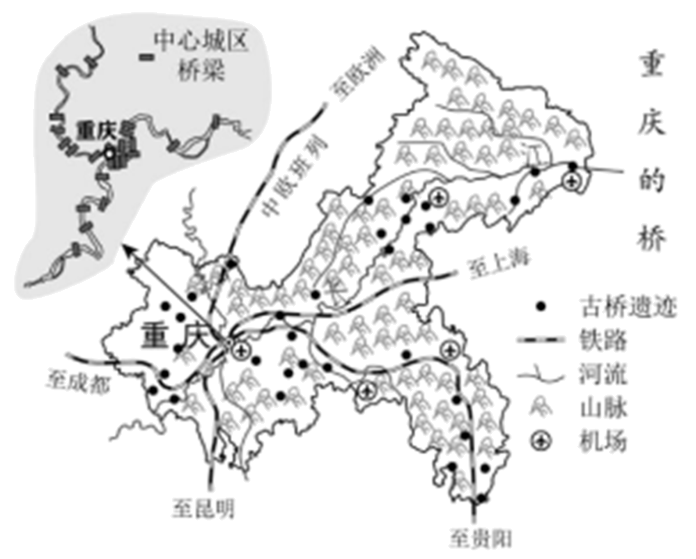
10. 重庆市桥梁众多的自然原因是（ ）
A. 山区广、河流多B. 人口多、占地广
C. 森林密、农田多D. 资金足、科技强
11. 现在，桥被赋予更多含义，成为重庆市对外联系的重要纽带。重庆市可以通过（ ）
A. “黄金水道”到达拉萨B. 中欧班列前往欧洲
C. 高速铁路直通东京D. 国际航空线直抵南极洲
【答案】10. A 11. B
【解析】
【10题详解】
重庆地形复杂，以山地、丘陵为主，属于山水相间的独特地貌，导致重庆市桥梁众多，为避开其河流和山区，A正确；人口多、占地广，资金足、科技强属于社会经济条件，排除BD；以山地、丘陵为主，山区面积广，农田不多，排除C；故选A。
【11题详解】
“黄金水道”是指长江，长江发源于青海省，无法直达拉萨且不符合对外联系重要枢纽的含义，排除A；重庆市可以通过中欧班列前往欧洲，中欧班列(渝新欧)从重庆沙坪坝区团结村车站驶出，向欧洲驶去，B正确，重庆位于我国中部地区，需要转乘，无直达东京的铁路线，排除C；国际航空线与重庆桥梁的含义无关，排除D；故选B。
【点睛】重庆是“红岩精神”起源地，巴渝文化发祥地，重庆有洪崖洞、长江三峡、世界遗产大足石刻、武隆喀斯特等景观。
东北虎和东北豹是世界珍稀濒危动物，是温带森林生态系统完整性的标志。2021年10月我国正式设立了东北虎豹国家公园，并与俄罗斯合作，共同促进人与虎豹和谐共处。图为东北虎豹国家公园和俄罗斯豹地国家公园简图。读图，完成下面小题。
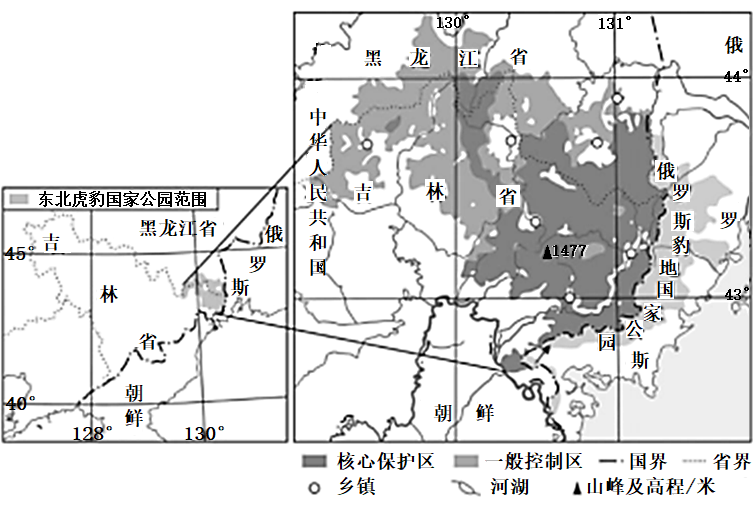
12. 东北虎豹国家公园（ ）
A. 主要分布在黑龙江省B. 一般控制区地跨中俄两国
C. 地形类型以山地为主D. 核心保护区内 乡镇密集
乡镇密集
13. 我国在此设立东北虎豹国家公园的主要原因包括（ ）
①该地为东北虎豹的栖息地②人类活动威胁虎豹的生存空间
③可以通过发展旅游业增收④是保护生态系统完整性的需要
A. ①②③B. ①②④C. ①③④D. ②③④
14. 为更好保护东北虎豹，应（ ）
A. 建立观测网，跟踪虎豹并每天投喂B. 增加投入，在核心保护区建娱乐设施
C. 迁出所有居民，扩大虎豹栖息地范围D. 加强国际合作，积极开展跨境保护
【答案】12. C 13. B 14. D
【解析】
【12题详解】
东北虎豹国家公园主要分布在吉林省，A错误；一般控制区主要位于中国，B错误；地形类型以山地为主，主要是长白山脉，C正确； 核心保护区内的乡镇稀疏，D错误。故选C。
【13题详解】
我国在此设立东北虎豹国家公园的主要原因包括：该地为东北虎豹的栖息地，在此基础上修建国家公园，更易于保护东北虎豹，①符合题意；人类活动威胁虎豹的生存空间，随着工业化、城市化进程的加快，人类对大自然的探索越来越频繁，不合理的人类活动可能会威胁虎豹的生存，有必要建立自然保护区或者国家公园进行保护，②符合题意；是保护生态系统完整性的需要，共同促进人与虎豹和谐共处，④符合题意。①②④符合题意，B正确。建立东北虎豹国家公园可以促进当地旅游业的发展，但这并不是主要原因，这是建立虎豹国家公园之后的结果，③不符合题意，ACD错误。故选B。
【14题详解】
建立观测网，跟踪虎豹并每天投喂会限制东北虎豹的自由，影响虎豹的生活，A错误。 增加投入，在核心保护区建娱乐设施会破坏东北虎豹的栖息地，B错误。 迁出所有居民，不现实，不合理，C错误。 加强国际合作，积极开展跨境保护，与俄罗斯共同保护东北虎豹，D正确。故选D。
【点睛】东北虎豹国家公园地处长白山腹地，地处黑龙江省东南部和吉林省的东北部的交界处，与朝鲜和俄罗斯接壤，是一个跨国界保护地建设区。
图为世界六大板块分布示意图。读图，完成问题。
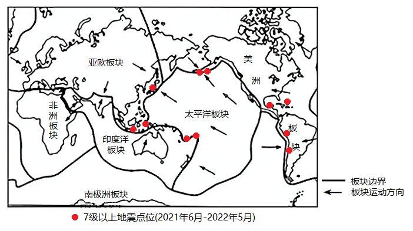
15. 2021年6月—2022年5月，7级及以上地震主要发生在（ ）
A. 非洲东部B. 南美洲中部C. 太平洋沿岸D. 大西洋西岸
16. 图中地震点位的分布特征及原因是（ ）
A. 位于板块交界地带，地壳活动活跃B. 位于板块内部，地壳活动活跃
C. 位于大洋边缘，地壳比较稳定D. 位于大陆内部，地壳比较稳定
【答案】15 C 16. A
C 16. A
【解析】
【15题详解】
由图可知，2021年6月—2022年5月，7级及以上地震主要发生在环太平洋沿海，C正确。非洲东部、 南美洲中部、 大西洋西岸地震较少，ABD错误。故选C。
【16题详解】
一般来说，板块的内部，地壳比较稳定；板块与板块交界的地带，有的张裂拉伸，有的碰撞挤压，地壳比较活跃，A正确，BCD错误。故选A。
【点睛】地质学家经过长期研究，又提出了板块构造学说。板块构造学说认为，地球岩石圈是由板块拼合而成的。全球主要有六大板块，此外，还有许多小板块。在六大板块中，太平洋板块几乎全部是海洋，其余板块既包括大陆，又包括海洋。海洋与陆地的相对位置是不断变化的。
图为孟加拉国位置及年降水量分布图。读图，完成下面小题。
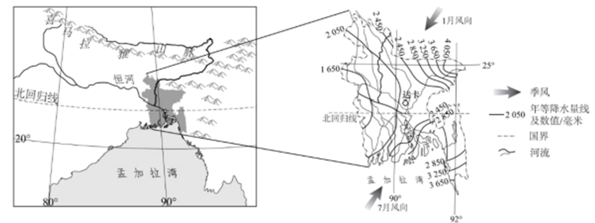
17. 该国年降水量（ ）
A 北部多、南部少B. 东部多、西部少C. 东南部最少D. 西南部最多
18. 影响该国年降水量分布的主要因素是（ ）
①海陆位置②河流③季风④地形
A. ①②③B. ①②④C. ①③④D. ②③④
19. 该国居民（ ）
A. 出行大多依靠骆驼B. 着装注重防寒保暖C. 修建房屋注意防洪D. 主食多为青稞制品
【答案】17. B 18. C 19. C
【解析】
【17题详解】
读图可知，雨季时，孟加拉国的降水量大致由西部向东南和东北方向递增，东部多，西部少，B正确；南北多，中部少，排除A；东北部最多，西部最少，排除CD；故选B。
【18题详解】
图中显示，孟加拉国西部内部降水较少，南部沿海降水较多，表明海陆位置对该国年降水量分布有较大影响，①符合题意；该国地处热带季风气候区，雨季时盛行来自海洋的西南季风影响，深入内陆后受到地形阻挡抬升，在东南和东北形成降水量高值区，因此季风和地形是影响该国年降水量分布的主要因素，③、④符合题意；河流对该国年降水量分布影响不明显，②不符合题意。综上所述，C符合题意，排除ABD。故选C。
【19题详解】
骆驼多位于沙漠地带，排除A；以热带气候为主，不需要防寒，排除B；多雨，修建房屋注意防洪，C正确；青稞主要种植在海拔较高，气候较为寒冷的地区，以我国青藏高原为典型，排除D；故选C。
【点睛】孟加拉国位于南亚次大陆东北部的恒河和布拉马普特拉河冲积而成的三角洲上。东、西、北三面与印度毗邻，东南部与缅甸接壤，南部濒临孟加拉湾。
第25届冬季奥运会将在意大利的米兰和科尔蒂纳丹佩佐两地举办。米兰是国际时尚之都和意大利第二大城市，科尔蒂纳丹佩佐是历史悠久的滑雪小镇。图为两地位置示意图。读图，完成下面小题。

20. 米兰（ ）
A. 位于北纬45.5°，东经9.2°B. 地处高纬度、高海拔地区
C. 位于科尔蒂纳丹佩佐的东北方向D. 距科尔蒂纳丹佩佐约100千米
21 两地共同举办冬奥会，利用了（ ）
①科尔蒂纳丹佩佐适宜高山滑雪的地形②科尔蒂纳丹佩佐原有的滑雪基础设施
③米兰的经济实力和文化影响力④米兰沿海和沿河的便利交通
A. ①②③B. ①②④C. ①③④D. ②③④
22. 冬奥会的举办可以（ ）
①促进国际经济和文化交流②带动全球冰雪运动发展
③缩短参赛国间的空间距离④增加承办地的就业机会
A. ①②③B. ①②④C. ①③④D. ②③④
【答案】20. A 21. A 22. B
【解析】
【20题详解】
经度度数向东变大为东经，经度度数向西变大为西经；纬度度数向北变大为北纬，纬度度数向南变大为南纬，米兰的经纬度坐标为（北纬45.5°，东经9.2°），A正确。地处中纬度，B错误。位于科尔蒂纳丹佩佐的西南方向，C错误。 距科尔蒂纳丹佩佐约200千米，D错误。故选A。
【21题详解】
两地共同举办冬奥会，利用了科尔蒂纳丹佩佐适宜高山滑雪的地形，因为它位于阿尔卑斯山脉附近，①符合题意；科尔蒂纳丹佩佐是历史悠久的滑雪小镇，滑雪基础设施完善，②符合题意；米兰是国际时尚之都和意大利第二大城市，经济实力和文化影响力较为深远，③符合题意；米兰位于内陆，不沿海，④不符合题意。①②③符合题意，A正确，BCD错误。故选A。
【22题详解】
冬奥会的举办，让国际社会对米兰和冰雪运动有更深刻的认识，可以促进国际经济和文化交流，带动全球冰雪运动发展，增加承办地的就业机会，拉动相关产业的发展，①②④符合题意。无法缩短参赛国间的空间距离，③不符合题意。故选B。
【点睛】欧洲西部冬奥会举办地利于开展雪上运动项目的自然条件是北部、南部多山地地形，坡度适宜，冬季降雪多，积雪量大。
赞比西河是世界水能最丰富的河流之一。图为非洲局部图。读图，完成下面小题。

23. 赞比西河（ ）
A. 自东向西流B. 流经热带草原C. 注入大西洋D. 属于内流河
24. 赞比西河的水文特征是（ ）
A. 结冰期长B. 流量季节变化小C. 冬季断流D. 水量大、流速快
25. 过度开垦、过度放牧等人类活动会导致图示地区（ ）
A. 土地荒漠化加剧B. 台风侵扰增加C. 低温冻害频发D. 雨林破坏严重
【答案】23. B 24. D 25. A
【解析】
【23题详解】
赞比西河大致自西向东注入莫桑比克海峡，排除A；赞比西河流经热带草原气候区，该气候具有全年高温、降水分干湿两季的特点，B正确；赞比西河注入莫桑比克海峡，属于印度洋水域，排除C；赞比西河注入莫桑比克海峡，为外流河，排除D；故选B。
【24题详解】
读图可知，赞比西河位于南回归线以南，地处热带地区，位于热带草原气候区，径流量的季节变化大，无结冰期，排除AB；赞比西河位于热带草原气候区，分旱雨两季，赞比西河流域面积大，地下水涵养水源较多，枯水期不会断流，而且该流域属热带气候，没有冬季，排除C；赞比西河汛期降水量丰富水量大，河流落差大，流速快，多瀑布、急流，水能蕴藏量大，D正确；故选D。
【25题详解】
过度开垦、过度放牧等人类活动会导致图示地区土地荒漠化加剧，A正确；过度开垦、过度放牧与气象灾害、气温变化无关，排除BD；图示以热带草原气候为主，无热带雨林分布，排除D；故选A。
【点睛】水文特征包括径流量，含沙量，汛期、结冰期、水能资源、流速及水位。影响河流水文特征的因素主要是气候因素。含沙量可以从河流流经的地区来看，径流量可以从多方面考虑，例如汇入支流的多少，所处地域降雨量是否充足等。
二、非选择题（本大题共4小题，共45分）
农业为基粮食为重
26. 农业是我们的衣食之源、生存之本，粮食生产更是重中之重。同学们围绕三个主题开展小组探究。阅读图文资料，回答下列问题。
主题一：粮食生产与耕地资源
粮食作物的生产与自然条件密切相关。图为我国主要粮食作物分布及石家庄、武汉气温曲线和降水量柱状图。
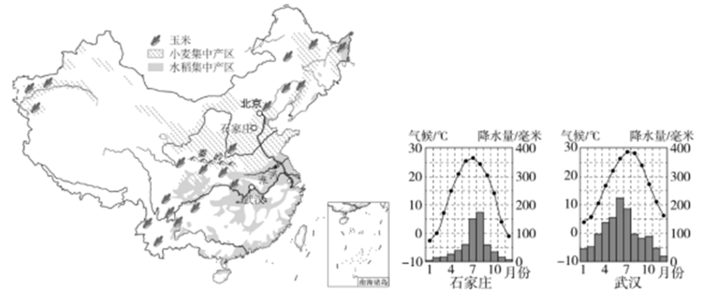
（1）比较我国主要粮食作物集中产区的耕地类型和自然条件，完成下表。
| 耕地类型 | 气候 | 地形 |
小麦集中产区 | 以旱地为主 | 冬季②____，夏季高温多雨 | 以④____、高原为主 |
秦岭—淮河 |
水稻集中产区 | 以①____为主 | 冬季温和少雨，夏季③____ | 以平原、盆地、丘陵为主 |
图为1949-2019年我国人口数量及人均耕地面积变化统计图。
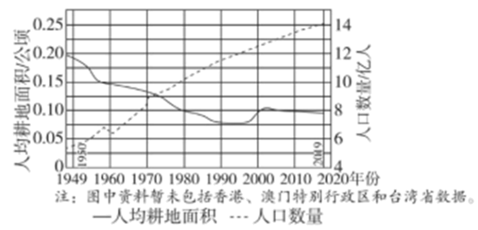
（2）1949年以来，我国人口数量总体呈____趋势，人均耕地面积总体呈____趋势。为确保粮食生产所需的耕地资源，我国应____（单项选择）。
A.严格保护耕地B.大力围湖造田C.退耕还林还草D.控制城市发展
主题二：粮食增产与科学技术
（3）提高粮食产量依靠科学技术。举例说明科技在粮食增产中的应用。（至少答出两点）
主题三：粮食消费与粮食安全
人们的粮食消费观念和行为关系到粮食安全。餐桌上的食物多来源于粮食作物。
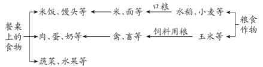
（4）粮食消费可分为直接消费和间接消费，食用米饭、馒头等属于直接消费，食用____等属于间接消费。我们在粮食消费中存在着浪费现象。为避免餐桌上的浪费，谈谈你的具体做法____（至少答出两点）。
【答案】（1） ①. 寒冷干燥 ②. 平原 ③. 水田 ④. 高温多雨
（2） ①. 上升 ②. 下降 ③. A
（3）①培育新品种，提高粮食单产；②修建温室大棚，调节温度、湿度；③采用无土栽培；④采用生物技术防治病虫害。
（4） ①. 肉、蛋、奶等 ②. ①合理用餐；②剩余菜肴要打包；③实施“光盘行动”
【解析】
【分析】本题以农业为材料，涉及到粮食生产、耕地资源、科学技术等知识点，考察学生的综合运用能力。
【小问1详解】
小麦集中产区位于秦岭-淮河以北，属于北方地区，气候类型主要是温带季风气候，冬季寒冷干燥，夏季高温多雨，北方地区地形区有黄土高原、东北平原、华北平原，地形以平原和高原为主；水稻集中产区位于秦岭-淮河以南，属于南方地区，耕地类型以水田为主，气候类型以亚热带季风气候为主，冬季温和少雨，夏季高温多雨，主要的地形区：四川盆地、云贵高原、长江中下游平原、东南丘陵，以平原、盆地、丘陵为主。
【小问2详解】
图表中，虚线代表人口数量，可以看出，1949年以来，到2020年我国人口将近14亿，我国人口数量总体呈上升趋势。实线代表人均耕地面积，可以看出，1949年以来，人均耕地面积呈波动下降趋势。为确保粮食生产所需的耕地资源，我国制定了“十分珍惜、合理利用土地和切实保护耕地”的基本国策，应严格保护耕地，A正确。大力围湖造田会使耕地面积减小，B错误。退耕还林还草有利于保护环境，但不是保护耕地的措施，C错误。城市可以发展，但是不能乱战耕地，D错误。故选A。
【小问3详解】
提高粮食产量关键要依靠科学技术。如①培育新品种，提高粮食单产，如袁隆平的杂交水稻；②通过温室大棚，调节植物生长的温度、湿度，突破植物生长的季节和地域限制。③采用无土栽培，节省耕地，绿色环保。④采用生物技术进行病虫害的防治，减少农药的使用。
【小问4详解】
粮食消费分直接消费和间接消费。直接消费，就是口粮消费，食用米饭、馒头等；间接消费，是指吃的肉禽蛋奶鱼等动物源食品中所包含的粮食，即生产这些产品所消耗的饲料粮。中国人每年在餐桌上浪费的粮食，相当于2亿多人一年的口粮。为了避免“餐桌上的浪费”，我们应该合理用餐、剩余菜肴要打包、实施“光盘行动”等。
巍巍太行生态屏障
27. 山脉是地形的骨架、通行的阻碍、河流的源头、风沙的屏障……图左为太行山脉及周边地区简图，图右为军都陉沿线地区等高线地形图。读图，回答下列问题。
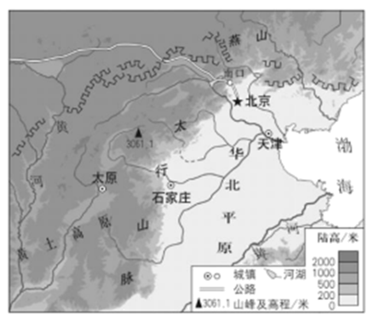
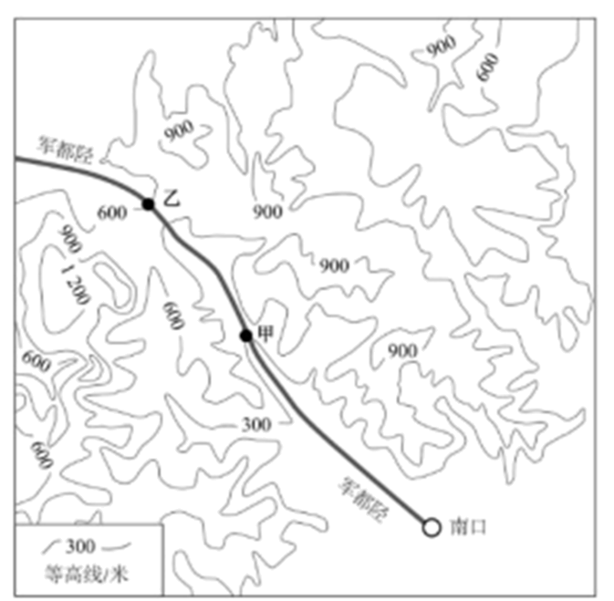
（1）太行山脉是我国重要的地理界线之一，将其两侧的地形区和地势阶梯填在①—④处。
____②____③____④____
陉（xíng），是指狭窄的通道。穿越太行山脉的八条通道被称为“太行八陉”，军都陉是其中最北的一条，古代商道和现代交通线路的修建均以此为重要依托。
（2）图中军都陉主要沿____（地形部位）延伸，沿线甲地的海拔为____，甲、乙两地之间的相对高度为____，军都陉在区域发展中的作用有____。
三十多年来，太行山区的森林覆盖率由13.1％提升到30％，太行山脉的生态环境效益日益凸显。
（3）简要说明对京津冀地区而言，太行山脉发挥的生态环境效益。（至少答出两点）
【答案】（1） ①. 黄土高原 ②. 华北平原
③. 地势较高，为第二阶梯 ④. 地势较低，为第三阶梯
（2） ①. 山谷 ②. 300米 ③. 300米 ④. 促进了该地区人员和物资的流通，促进了商业的发展，并且为现代交通线路的修建提供了基础，降低了修建难度，促进了经济的发展。
（3）①涵养水源 ②保持水土 ③净化空气
【解析】
【分析】本题以太行山所在地区为材料，涉及到该区域的地形、环境等知识点，考察学生的综合运用能力。
【小问1详解】
太行山脉为东北—西南走向的山脉，是我国重要的地理界线，是我国地势二、三阶梯的分界线；是华北平原和黄土高原的分界线；是山西省和河北省的分界线。太行山以西是山西省，地形区为黄土高原，地势较高，是第二阶梯。太行山以东是河北省，地形区为华北平原，地势较低，是第三阶梯。
【小问2详解】
由等高线地形图可以看出，等高线凸向海拔更高的地方，地形部位为山谷。根据“同一条等高线海拔相同”的原理，可知甲地的海拔高度为300米。乙地的海拔高度为600米，甲乙两地的相对高度=600-300=300米。军都陉对于古代商道和现代交通线路的修建都有重要意义，它在古代，促进了该地区的物资流通，促进了商业的发展。并且为现代交通线路的修建提供了基础，降低了修建难度，完善了交通运输网络，拉动相关产业的发展，促进经济的发展。
【小问3详解】
太行山脉森林覆盖率极大提高，其环境效益和经济效益都非常明显，其环境效益有：涵养水源、保持水土、净化空气等，经济效益有：提供木材、提供药材等。
运用方法认识区域
28. 不同比例尺地图表示的地域范围和内容详略程度不同，认识区域应选择比例尺合适的地图。图16是不同比例尺的区域简图。阅读图文资料，回答下列问题。
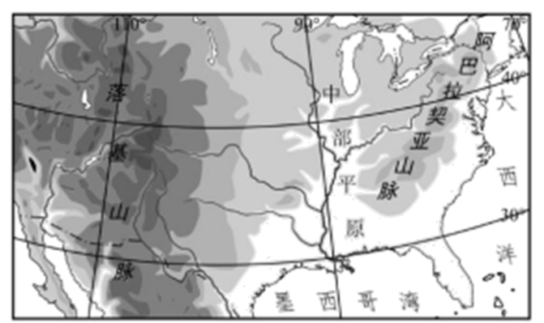
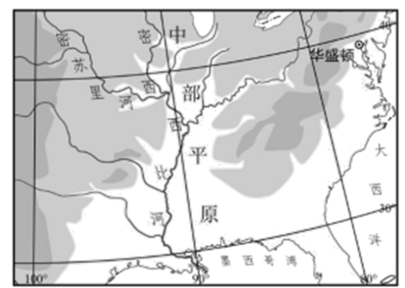
A B
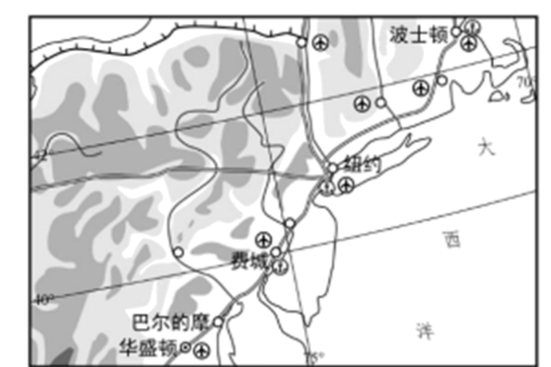
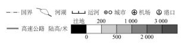
C
（1）图A所示区域的东北部为____山脉，中部为中部平原，西部为____山脉；地势的大总体特征是____。图A所示区域沿北纬40°线的地形剖面示意图是____（单项选择）。
A.
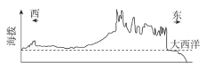
B. 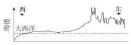
C.
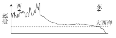
D. 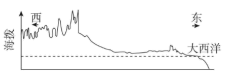
（2）图B中，中部平原的总体地势特征为____高____低。该平原为重要的农业区，分析当地农业生产的自然条件，完成下框图。
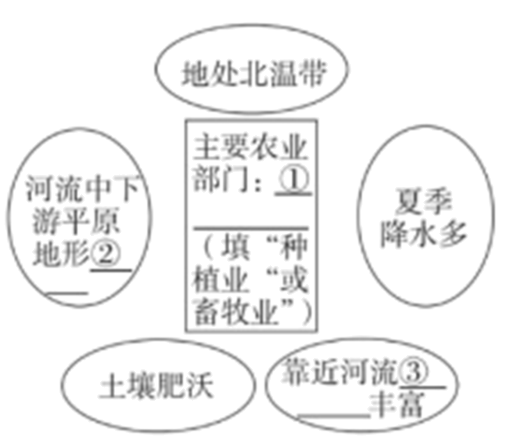
①____②____③____
（3）图C所示区域城市集中分布在____。从地理位置的角度，分析该区域城市密集的原因________（至少答出两点）。
【答案】（1） ①. 阿巴拉契亚
②. 落基山
③. 东西高，中间低 ④. D
（2） ①. 北 ②. 南 ③. 种植业 ④. 平坦 ⑤. 水资源
（3） ①. 沿海地区 ②. 地形平坦，气候适宜；水陆交通便利；经济发展快等
【解析】
【分析】本题以美国为材料，设置三个小题，涉及美国的地形地势特征、气候类型、农业分布等相关内容，考查学生对相关知识的掌握程度。
【小问1详解】
读图可知，该局部示意图为美国地区地形图，东部是低矮的阿巴拉契亚山，西部是高大的落基山，中部是平原的密西西比河平原，地势呈现东西高，中间低；读图可知，A东西高，但西部应该更高，排除A；B东部为低矮的阿巴拉契亚山，西部无高大的落基山，呈现西低东高的地势特征，排除B；C东部无低矮的阿巴拉契亚山，呈现西高东低的地势特征，排除C；D呈现东西高，中间低的地势特征，符合题意，故选D。
【小问2详解】
读图可知，河流自高向低流，密西西比河自北向南流可知中部平原的总体地势特征为北高南低；密西西比河流域主要以种植业为主，畜牧业主要分布在美国东北部及五大湖附近，河流中下游平原地形平坦，土壤肥沃，靠近密西西比河流域，水资源丰富，种植业发达。
【小问3详解】
读图可知，C区域城市主要集中在沿海地区，主要原因是沿海地区，地势低平，气候适宜，水陆交通便利，降水量丰富，经济发展较快，纽约是美国最大的城市。
科学考察探索自然
29. 青藏地区和南极地区是开展科学考察的天然实验室，我国对这两个地区进行了多次科学考察。图为青藏地区和南极地区位置示意图。阅读图文资料，回答下列问题。
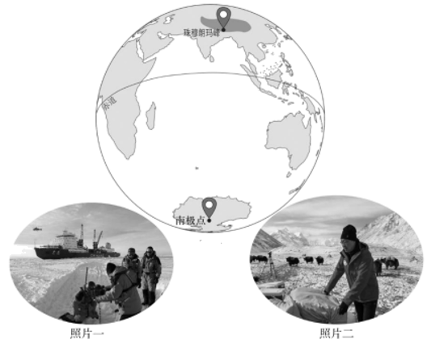
（1）照片一和照片二反映的是两地区科学考察的场景。任选其一，判断照片的拍摄地，说出两点理由。
（2）适合青藏科考的时间段是____，适合南极科考的时间段是____。（单项选择）
A.11月一次年4月B.5-8月C.全年
（3）青藏地区和南极地区气候寒冷，但成因不同。青藏地区主要是由于____高，南极地区主要是由于____高。
（4）青藏地区和南极地区都是对全球气候变化最为敏感的地区。①—④表示气候变化对两个地区环境的不同影响，将数字序号填在对应的横线上。
①海冰、冰盖面积变化②高海拔湖泊、湿地面积变化③“亚洲水塔”水量变化④极地海洋生物的栖息地变化
对青藏地区影响有____；对南极地区的影响有____。
【答案】（1）照片一为南极点的科学考察场景，南极地区纬度高，气候寒冷，海面结冰，多冰川，需要破冰船辅助前行。照片二为珠穆朗玛峰的科学考察场景，图片中显示有被称为“高原之舟”的牦牛，牦牛是青藏地区的代表性动物。
（2） ①. B ②. A
（3） ①. 海拔
②. 纬度
（4） ①. ②③ ②. ①④
【解析】
【分析】本题以青藏地区和南极地区的科学考察为材料，涉及到二者的气候与环境等知识点，考察学生的区域认知能力。
【小问1详解】
照片一为南极点的科学考察场景，显示了正在极地科考的破冰船，南极地区纬度高，气候寒冷，海面结冰，多冰川，需要破冰船辅助前进。照片二为珠穆朗玛峰的科学考察场景，青藏地区畜牧业发达，有被称为“高原之舟”的牦牛，它的毛厚而长，耐寒力强，体矮身健，善于爬山负重。
【小问2详解】
适合青藏科考的时间段是5-8月，由于青藏高原海拔高，平均海拔在4000米以上，被称为世界屋脊，气候因海拔高而寒冷，5-8月大部分时间为夏季，气温相对较高，便于考察，B符合题意。适合南极科考的时间段是11月一次年4月，南北半球季节相反，此时为南极地区的暖季，并且出现极昼现象，便于考察，A符合题意。
【小问3详解】
青藏地区和南极地区气候寒冷，但成因不同。青藏地区主要是由于海拔高，被称为“世界屋脊”，是世界上海拔最高的高原。南极地区主要是由于纬度高，大部分位于南极圈之内，常年被冰雪覆盖。
【小问4详解】
青藏地区和南极地区都是对全球气候变化最为敏感的地区。随着全球气候变暖，青藏地区的高海拔湖泊、湿地面积会逐渐萎缩，“亚洲水塔”水量变化逐渐减少，②③符合青藏地区。南极地区冰川会消融，海冰、冰盖面积减小，进而影响极地海洋生物的栖息地，①④符合南极地区。